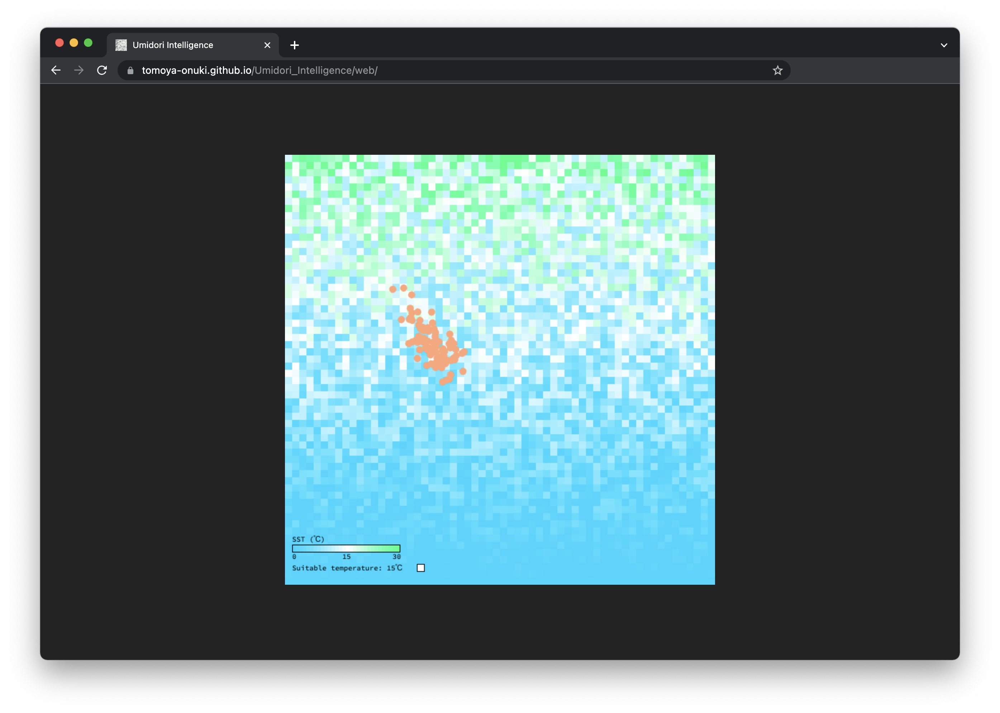

Umidori Intelligence
2021.06 / AI

筑波大学大学院の講義 スマートインフォメディアシステム特論の最終課題として作成したシミュレーター
海鳥の中には海水面温度の変化に応じて移動する種がいる。その動きをPSOと呼ばれる群知能アルゴリズムの一種を用いてシミュレートした。
- 背景の色：海水面温度を表す。0度が青、15度が白、30度が緑となるように当てはめ、それらを線形のグラデーションで変化させる。
- 橙色の円：海鳥の位置を表す。
ここでは15度を適温とする架空の鳥を想定する。鳥は適温に近いピクセルを探索し、追うように移動する。
Development
Processing